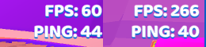
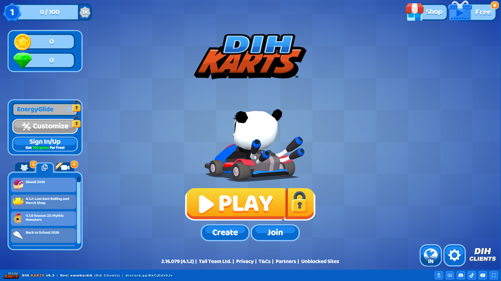

See the difference
Drag the handle. Left is stock SmashKarts in a browser (ad panel, FPS stuck at 60). Right is Dih Karts. Same moment, same game.


Stock: ad panel on the right, FPS counter capped at 60 · Dih Karts: full width, real FPS, our logo.

Everything in the box
Built for people who want the game to feel fast and look clean.
Uncapped FPS
Chromium's frame limit and VSync are lifted and the renderer is never throttled. 177–423 FPS measured on a 60 Hz screen.
A counter that tells the truth
The game clamps its own counter to 60. We patch that one value in memory, so the original-looking counter shows the real number.
Ad blocker
Ghostery engine with EasyList, EasyPrivacy and Fanboy lists. The ad panel is gone and the game fills the window.
Our branding, inside the game
The Dih Karts logo and a Dih Clients mark replace the originals in the game's own textures. Signature-checked, so it skips itself if the game changes.
Proper fullscreen
F11 or the bar button fills the whole screen with the bar pinned to the bottom. No blank strip, no letterboxing.
Discord Rich Presence
"Racing in Dih Karts" on your profile with Join Discord and Download buttons for friends.
Fast launch
The patched game build is cached on disk. Later launches skip the 50 MB download and patching.
Networking
DNS-over-HTTPS, QUIC and pre-warmed connections. Faster connection setup; it can't change server ping.
FPS limiter & render scale
Cycle 240 / 165 / 144 / 120 / 60 FPS with F6 and 1.0 / 0.75 / 0.5 / 1.25× resolution with F7.
Smarter resource use
Prefers the dedicated GPU, uses fewer browser processes and drops to 30 FPS while the window is in the background.
Remembers you
Window size, position and fullscreen state are restored. Your settings are saved between launches.
Low-latency canvas EXPERIMENTAL
Off by default. F9 + restart creates the canvas desynchronized on the high-performance GPU. Screen-capture tools may show it black.


Get Dih Karts
Free. Windows x64. Extract the zip and run Dih Karts.exe.
Download
Grab DihKarts-win-x64.zip from the button above.
Extract
Unzip anywhere — a folder on your desktop is fine. No installer, no admin rights.
Play
Run Dih Karts.exe. First launch downloads the game; later launches are quick.
Hotkeys
Everything you need is one key away.
| Key | Action |
|---|---|
| F11 | Fullscreen (also the bar's fullscreen button) |
| F5 | Reload |
| F6 | Cycle FPS limit: Unlimited / 240 / 165 / 144 / 120 / 60 |
| F7 | Cycle render scale: 1.0× / 0.75× / 0.5× / 1.25× |
| F8 | Toggle the watermark |
| F9 | Toggle experimental low-latency canvas (restart to apply) |
| Ctrl+Shift+I | DevTools |
FAQ
Is this safe? Will I get banned?
Dih Karts loads the real smashkarts.io and doesn't touch accounts, coins, gems or matchmaking. It changes how the game is displayed and how fast it runs. It is an unofficial client, so use it at your own discretion. The full source is on GitHub.
Why does my FPS go above my monitor's refresh rate?
Stock browsers sync to your monitor. Dih Karts turns that off, so the game renders as fast as your GPU allows. Use F6 to cap it if you'd like less heat or screen tearing.
The screen looks black when I record it.
Leave the experimental low-latency canvas off (default). If you turned it on with F9, press F9 again and restart.
Windows says "unknown publisher".
The app isn't code-signed. Check the SHA-256 against the one published in the release and in our Discord, or build it from source with node tools/package.js.
Does it work on Mac or Linux?
Only Windows x64 builds are published today. The source is cross-platform Electron; ask in the Discord if you want another platform.
Is it affiliated with Tall Team?
No. Dih Karts is an unofficial fan-made client. SmashKarts and its artwork belong to Tall Team Ltd.